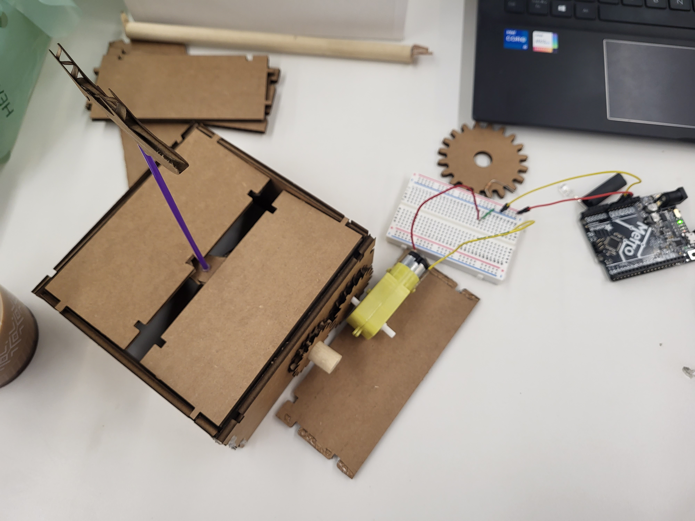
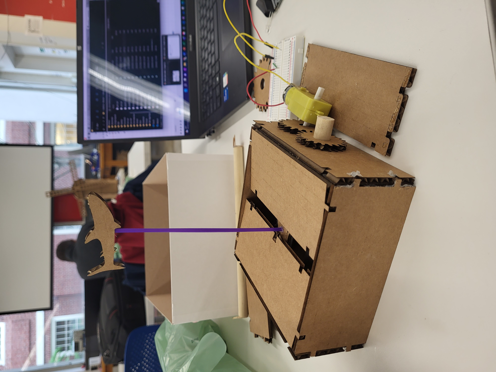
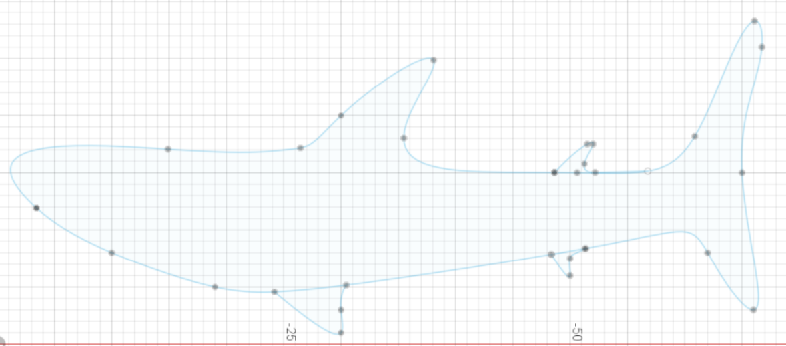
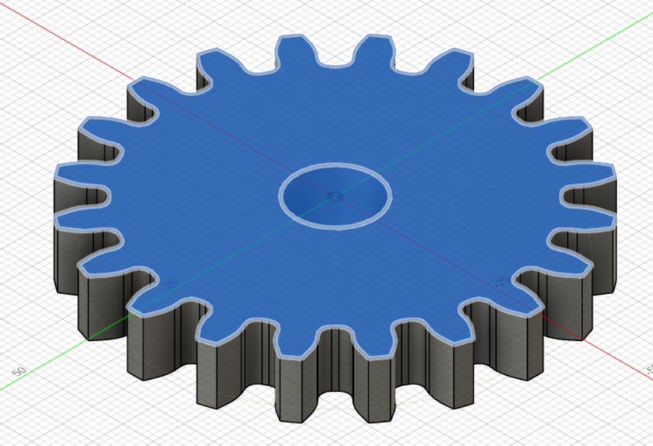

<br>
#### Week 3: Hand Tools and Fabrication
This week, I made a kinetic sculpture! I learned how to use hand tools, got a bit better at Fusion 360, and learned how to use lots of machines and hand tools in the shop.
The assignment was to make something that included a motor/movement. I was able to use some of the box materials I laser cut last week for the project. It was the same deal as last week for the design: I sketched shapes in 2D in Fusion, extruded them to 3D, and then converted the projection of that shape into a DXF file which I could then upload into the laser cutter program. I used the spur gear plug in on Fusion 360 to make the gear, and I made the whale shark shape freehand using the curve tool. I used standard values of 4.6mm for cardboard thickness, 0.3mm for kerf, and various other lengths of the dimensions of the shapes I made.
<br>

<br>
<br>

I used the laser cutter on the following settings:
max_speed = 20; min_speed = 20; power = 60
<br>
I designed a gear and an oval in Fusion to attach to the 12.8mm diameter dowel, accounting for kerf appropriately.
I then hooked up my motor to the contraption and connected it to the gear that turns the dowel.
When the dowel turns, the stick with the whale shark on it goes up and down. Ideally, anyway!!
Here are some of the sketches I used for the sculpture that I modeled in Fusion 360.


To be honest, I didn't have much time this week to work on this, so I'll be adding a video of it once I get it working a bit better.
Click [here](../index.html) to return to the homepage.